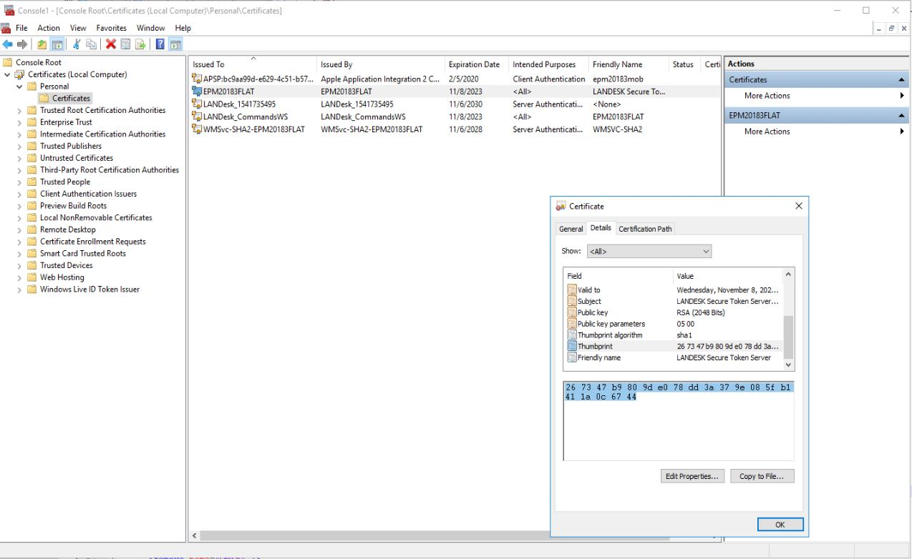
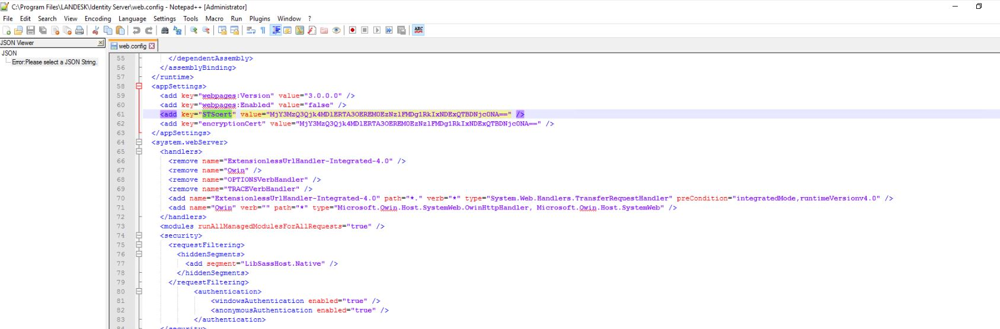

Decode your thumbprint
Decoded thumbprint will be displayed here
Where to find this "thumbprint"?

On core server go to mmc
Add/remove snapin
Certificates
Add
Computer - local accounts
In the certificates click on certificate that is named as current server
Double click on it and go to details
Click on thumbprint, you can copy it from here
What to do with it?

Check if your IIS thumbprints in web.configs for sites are correct
for example is the value returned is the same as the one inside: C:\Program Files\LANDESK\Identity Server for STScert value
Certificates